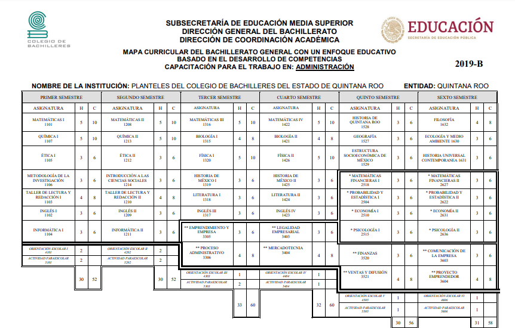

La capacitación para el trabajo en Administración pertenece al campo disciplinario de las ciencias sociales.
Descripción
Permiten al alumnos representar la realidad de su entorno social, para transformarla mediante la aprobación de conocimientos, el descubrimiento de significados, la generación de ideas y transmitirlas eficazmente.
Su propósito es:
Es proporcionar herramientas y favorecer el desarrollo de habilidades y actitudes para que el estudiantado estructure proyectos, sustentables, viables y factibles en el contexto en el que vive con una visión emprendedora.
Los egresados de esta capacitación se pueden integrar a la vida laboral anto en instituciones públicas como privadas en los siguientes perfiles ocupacionales: auxiliar administrativo, asistente de investigación, encuentas-entrevista, ventas y servicios financieros analistas de relaciones públicas y comunicación.
